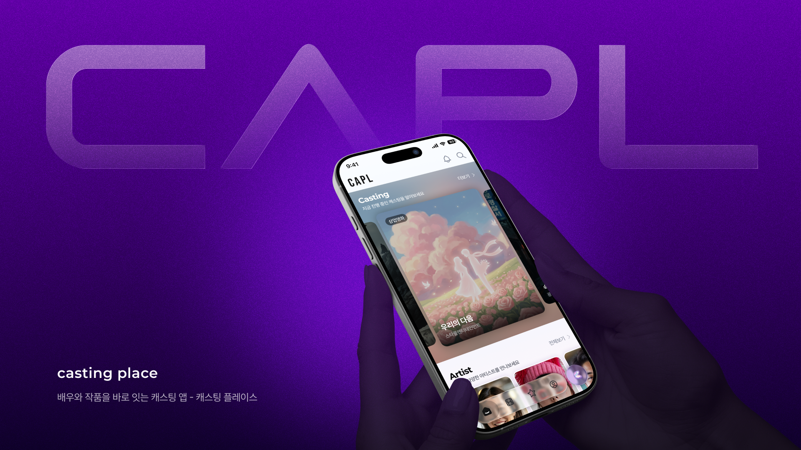
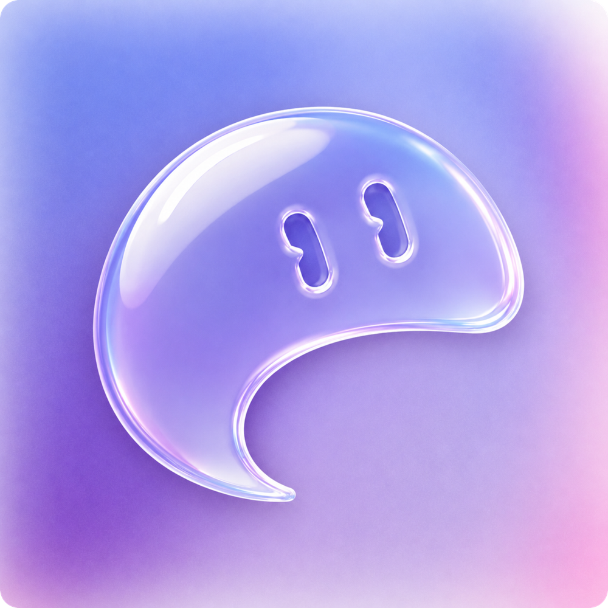
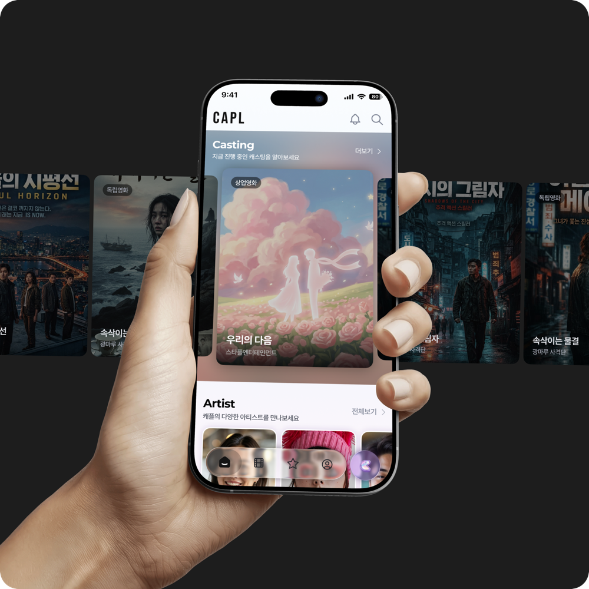

신인 배우
“어디서든 불러주면 감사하지만, 디렉터에게만 보여주고 싶어요”
- 정보 경로
- 학원·지인
- 지원 기준
- 배역 비중
- 알고 싶은 것
- 지원자 수·주연
- 피하고 싶은 시선
- 동료 배우

Overview
제작사였던 회사는 새로운 배우를 찾기 어려웠고, 배우들은 오디션 정보를 얻기 어려웠습니다. 그래서 배우가 오디션에 지원할수록, 제작사가 찾아볼 수 있는 배우 DB도 함께 쌓이는 구조를 만들고자 했습니다.


01 Desk Research
제작사로서 작품을 준비할 때마다 같은 벽에 부딪혔습니다. 이미 알려진 배우는 비싸고, 새로운 얼굴은 찾을 곳이 없었습니다.
이 문제는 제가 먼저 겪었습니다. 영화 현장에 미술소품 담당으로 참여했지만, 제작이 원활히 돌아가도록 제작실장 역할까지 도맡았습니다. 그때 처음 배우 섭외를 맡으면서, 인맥이 없으면 단역 한 명 구하기도 어렵다는 걸 알게 됐습니다. 회사 매니지먼트를 통해 연기학원을 소개받고, 직접 오디션을 보러 가고, 출연료를 하나하나 맞춰야 했습니다.
01 · Market Growth
OTT, 유튜브 오리지널, 웹드라마, 숏폼까지 배우가 설 무대가 빠르게 늘고 있다.
128.3조 → 157.4조 원국내 콘텐츠산업 매출 2020 → 2024 (4년간 약 23% 증가)
출처: 문화체육관광부 콘텐츠산업조사
02 · Connection Gap
작품과 활동하는 예술인은 해마다 늘었지만, 캐스팅은 여전히 에이전시와 지인 추천, 학원에 기대고 있었다.
10만 → 20만 명예술활동증명을 받은 활동하는 예술인 2021 → 2025 (4년 반 만에 2배)
출처: 한국예술인복지재단
03 · Closed Information
오디션 정보는 소속사와 인맥 안에서만 돌아, 신인 배우는 기회가 있는지조차 알기 어려웠다.
“오디션 정보는 대체 어디서 얻는 거야?”
04 · Limited Discovery
제작사와 매니지먼트는 가능성 있는 신인을 찾고 싶어도, 체계적으로 찾아볼 통로가 없었다.
02 Insight
이후에 회사 매니지먼트 소속 배우들과 매니저들의 이야기를 가까이서 들었고, 그 과정에서 붙잡아야 할 지점이 보였습니다. 배우들은 더 많은 오디션 정보를 원하면서도, 프로필과 오디션 활동이 드러나는 것은 조심스러워했습니다. 신인은 알려지고 싶어 했고, 경력 배우는 맡아온 배역 이미지를 지키고 싶어 했습니다.
* 검증: [사내 매니저 검토 결과가 오면 채울 자리]
인터뷰 목적
[인터뷰 목적을 적어주세요]
인터뷰 질문
[주요 질문을 적어주세요]
진행 방식
[진행 방식을 적어주세요]
“어디서든 불러주면 감사하지만, 디렉터에게만 보여주고 싶어요”
“이미지가 중요해서, 말 한마디도 파급력이 있어요”
“[소속사 대표의 한마디를 적어주세요]”
가설 검증
배우들에게 가장 어려운 일은 오디션을 “찾는 것”이라 보고 흩어진 정보를 한곳에 모으려 했지만,
소속 배우와 매니저 인터뷰를 통해 두 가지가 다르다는 걸 알게 됐어요.
“몇 부작인지, 이 배역을 받은 배우가 저 말고 더 있는지 알고 싶었어요.”
경력 배우
“오디션장에서 있었던 일을 나눠요. 감독님의 스타일이나 배역의 스타일, 제 연기에 대한 회고 같은 것들요.”
신인 배우
초기 생각오디션을 찾게 해주면 된다
바뀐 생각지원을 판단할 정보를 줘야 한다
설계에 미친 영향
배우들은 배역의 비중, 필모그래피에서의 의미, 감독과 작품까지 따져본 뒤 지원했지만, 판단할 정보를 얻을 곳이 없었습니다.
목표많이 지원하는 대신, 나에게 맞는 오디션을 골라 신중하게 지원하도록
초기 생각오디션은 합격을 위한 관문이다
바뀐 생각신인에게 오디션은 배움의 기회다
설계에 미친 영향
신인은 합격보다 감독의 스타일, 배역 해석, 그날의 연기 회고를 더 오래 이야기했지만, 감독을 만날 길은 학원 단체 오디션뿐이었고 떨어지면 피드백도 없었습니다. 폐쇄적인 업계 문화 탓에 경험을 드러내 놓고 나누기도 어려웠습니다.
목표합격을 기다리는 앱이 아니라, 지원할 오디션이 없는 날에도 배우로서 자랄 수 있는 앱
03 Strategy & Structure
제작사이자 매니지먼트를 함께 운영하는 회사였기 때문에, 이 문제를 풀 조건이 갖춰져 있었습니다.
01 · Audition Supply
자사 작품의 오디션을 플랫폼에 열어, 출시 첫날부터 배우가 지원할 기회가 있었습니다. 오디션이 없으면 배우가 오지 않는 플랫폼의 첫 난관을 처음부터 풀고 시작한 것입니다.
02 · Actor Insight
사내 매니지먼트를 통해 소속 배우들이 무엇을 원하고 무엇을 꺼리는지 가까이서 볼 수 있었습니다.
캐스팅플레이스는 배우 앱과 어드민 두 축으로 설계했고, 두 축을 잇는 것은 프로필입니다. 배우가 앱에서 정해진 형식으로 프로필을 만들면, 어드민에서는 모든 지원자를 같은 기준으로 비교할 수 있습니다.
Actor App
Profile
Admin
오디션이 열리면 배우가 지원하고, 지원이 쌓일수록 제작사가 찾아볼 수 있는 배우 DB가 커집니다. 커진 DB는 다시 신인 발굴과 다음 오디션으로 이어집니다.
04 Design Decisions
오디션 정보가 소속사·인맥 안에서만 돌아
신인은 기회가 있는지도 모름
소속사가 없어도 지금 열린 오디션을
바로 확인하고 지원할 수 있는 홈
지원하면 프로필과 활동이 드러나
동료와 업계의 시선이 부담
[실제 기능에 맞게 수정] 공개 범위를 직접 정해
원하는 곳에만 프로필을 보여줌
제작사는 추천받은 배우에만 의존하고
지원자를 비교할 기준이 없음
정해진 형식의 프로필로 지원자를 비교하고
지원할수록 배우 DB가 쌓임
* 서체·크기·색상 값은 실제 앱 값으로 수정해주세요. (보라색은 캐플 메인 이미지에서 뽑은 값)
Typography
Pretendard
프리텐다드
ExtraBold / Bold / Medium / Regular / Light
Headline
Title
Body
Caption
Colors
Icons & Components
Badge
Button
Bottom Sheet
Toast
화면 흐름 전체에 대한 설명을 적어주세요. (홈 → 프로필 → 커뮤니티 → 멤버십 → 이벤트)
홈 화면의 디자인 결정을 적어주세요.
프로필 화면의 디자인 결정을 적어주세요.
커뮤니티 화면의 디자인 결정을 적어주세요.
멤버십 화면의 디자인 결정을 적어주세요.
이벤트 화면의 디자인 결정을 적어주세요.
05 Launch & Retrospective
2인 팀 출시, 확인하려던 지표, 배운 점을 적어주세요.